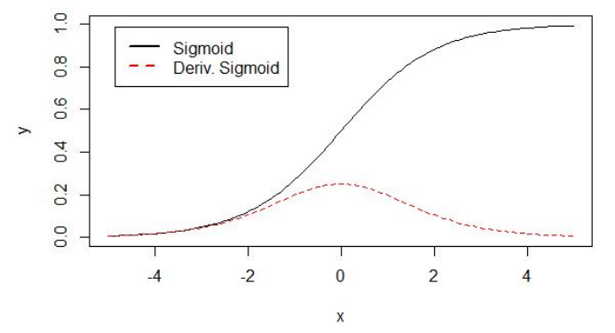
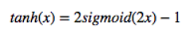

激活函数优缺点比较
1. 什么是激活函数
如下图，在神经元中，输入的 inputs 通过加权，求和后，还被作用了一个函数，这个函数就是激活函数 Activation Function。
2. 为什么要用
如果不用激励函数，每一层输出都是上层输入的线性函数，无论神经网络有多少层，输出都是输入的线性组合。
如果使用的话，激活函数给神经元引入了非线性因素，使得神经网络可以任意逼近任何非线性函数，这样神经网络就可以应用到众多的非线性模型中。
3. 都有什么
(1) sigmoid函数
公式：
曲线：
也叫 Logistic 函数，用于隐层神经元输出
取值范围为(0,1)
它可以将一个实数映射到(0,1)的区间，可以用来做二分类。
在特征相差比较复杂或是相差不是特别大时效果比较好。
sigmoid缺点：
激活函数计算量大，反向传播求误差梯度时，求导涉及除法
反向传播时，很容易就会出现梯度消失的情况，从而无法完成深层网络的训练
下面解释为何会出现梯度消失：
反向传播算法中，要对激活函数求导，sigmoid 的导数表达式为：
sigmoid 原函数及导数图形如下：

由图可知，导数从 0 开始很快就又趋近于 0 了，易造成“梯度消失”现象
(2) Tanh函数
公式

曲线
也称为双切正切函数
取值范围为[-1,1]。
tanh在特征相差明显时的效果会很好，在循环过程中会不断扩大特征效果。
与 sigmoid 的区别是，tanh 是 0 均值的，因此实际应用中 tanh 会比 sigmoid 更好
(3) ReLU
Rectified Linear Unit(ReLU) - 用于隐层神经元输出
公式
曲线
输入信号 <0 时，输出都是0，>0 的情况下，输出等于输入
ReLU 的优点：
Krizhevsky et al. 发现使用 ReLU 得到的 SGD 的收敛速度会比 sigmoid/tanh 快很多
ReLU 的缺点：
训练的时候很”脆弱”，很容易就”die”了
例如，一个非常大的梯度流过一个 ReLU 神经元，更新过参数之后，这个神经元再也不会对任何数据有激活现象了，那么这个神经元的梯度就永远都会是 0.
如果 learning rate 很大，那么很有可能网络中的 40% 的神经元都”dead”了。
(4) softmax函数
Softmax - 用于多分类神经网络输出
公式
举个例子来看公式的意思：
就是如果某一个 zj 大过其他 z, 那这个映射的分量就逼近于 1,其他就逼近于 0，主要应用就是多分类。
为什么要取指数，第一个原因是要模拟 max 的行为，所以要让大的更大。
第二个原因是需要一个可导的函数。
4. sigmoid ，ReLU， softmax 的比较
Sigmoid 和 ReLU 比较：
sigmoid 的梯度消失问题，ReLU 的导数就不存在这样的问题，它的导数表达式如下：
曲线如图
对比sigmoid类函数主要变化是：
1）单侧抑制
2）相对宽阔的兴奋边界
3）稀疏激活性。
Sigmoid 和 Softmax 区别：
softmax is a generalization of logistic function that “squashes”(maps) a K-dimensional vector z of arbitrary real values to a K-dimensional vector σ(z) of real values in the range (0, 1) that add up to 1.
sigmoid将一个real value映射到（0,1）的区间，用来做二分类。
而 softmax 把一个 k 维的real value向量（a1,a2,a3,a4….）映射成一个（b1,b2,b3,b4….）其中 bi 是一个 0～1 的常数，输出神经元之和为 1.0，所以相当于概率值，然后可以根据 bi 的概率大小来进行多分类的任务。
二分类问题时 sigmoid 和 softmax 是一样的，求的都是 cross entropy loss，而 softmax 可以用于多分类问题
softmax是sigmoid的扩展，因为，当类别数 k＝2 时，softmax 回归退化为 logistic 回归。具体地说，当 k＝2 时，softmax 回归的假设函数为：
利用softmax回归参数冗余的特点，从两个参数向量中都减去向量θ1 ，得到:
最后，用 θ′ 来表示 θ2−θ1，上述公式可以表示为 softmax 回归器预测其中一个类别的概率为
另一个类别概率的为
这与 logistic回归是一致的。
softmax建模使用的分布是多项式分布，而logistic则基于伯努利分布
多个logistic回归通过叠加也同样可以实现多分类的效果，但是 softmax回归进行的多分类，类与类之间是互斥的，即一个输入只能被归为一类；多个logistic回归进行多分类，输出的类别并不是互斥的，即"苹果"这个词语既属于"水果"类也属于"3C"类别。
5. 如何选择
选择的时候，就是根据各个函数的优缺点来配置，例如：
如果使用 ReLU，要小心设置 learning rate，注意不要让网络出现很多 “dead” 神经元，如果不好解决，可以试试 Leaky ReLU、PReLU 或者 Maxout.